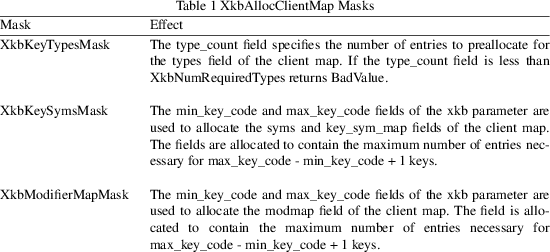

XkbFreeClientMap − Free memory used by the client map member of an XkbDescRec structure
|
void XkbFreeClientMap |
(XkbDescPtr xkb, unsigned int which, Bool |
free_all);
|
xkb |
keyboard description containing client map to free |
|||
|
which |
mask identifying components of map to free |
free_all
True => free all client components and map itself
XkbFreeClientMap frees the components of client map specified by which in the XkbDescRec structure specified by the xkb parameter and sets the corresponding structure component values to NULL. The which parameter specifies a combination of the client map masks shown in Table 1.
If free_all is True, which is ignored; XkbFreeClientMap frees every non-NULL structure component in the client map, frees the XkbClientMapRec structure referenced by the map member of the xkb parameter, and sets the map member to NULL.

NOTE: The min_key_code and max_key_code fields of the xkb parameter must be legal values if the XkbKeySymsMask or XkbModifierMapMask masks are set in the which parameter. If they are not valid, XkbAllocClientMap returns BadValue.
The complete description of an Xkb keyboard is given by an XkbDescRec. The component structures in the XkbDescRec represent the major Xkb components.
typedef struct
{
struct _XDisplay * display; /* connection to X server */
unsigned short flags; /* private to Xkb, do not modify */
unsigned short device_spec; /* device of interest */
KeyCode min_key_code; /* minimum keycode for device */
KeyCode max_key_code; /* maximum keycode for device */
XkbControlsPtr ctrls; /* controls */
XkbServerMapPtr server; /* server keymap */
XkbClientMapPtr map; /* client keymap */
XkbIndicatorPtr indicators; /* indicator map */
XkbNamesPtr names; /* names for all components */
XkbCompatMapPtr compat; /* compatibility map */
XkbGeometryPtr geom; /* physical geometry of keyboard */
} XkbDescRec, *XkbDescPtr;
The display field points to an X display structure. The flags field is private to the library: modifying flags may yield unpredictable results. The device_spec field specifies the device identifier of the keyboard input device, or XkbUseCoreKeyboard, which specifies the core keyboard device. The min_key_code and max_key_code fields specify the least and greatest keycode that can be returned by the keyboard.
Each structure component has a corresponding mask bit that is used in function calls to indicate that the structure should be manipulated in some manner, such as allocating it or freeing it. These masks and their relationships to the fields in the XkbDescRec are shown in Table 2.
The map field of the complete Xkb keyboard description is a pointer to the Xkb client map, which is of type XkbClientMapRec:
typedef struct
{ /* Client Map */
unsigned char size_types; /* # occupied entries in types */
unsigned char num_types; /* # entries in types */
XkbKeyTypePtr types; /* vector of key types used by this
keymap */
unsigned short size_syms; /* length of the syms array */
unsigned short num_syms; /* # entries in syms */
KeySym * syms; /* linear 2d tables of keysyms, 1 per key */
XkbSymMapPtr key_sym_map; /* 1 per keycode, maps keycode to
syms */
unsigned char * modmap; /* 1 per keycode, real mods bound to
key */
} XkbClientMapRec, *XkbClientMapPtr;
|
BadValue |
An argument is out of range |
XkbAllocClientMap(3)